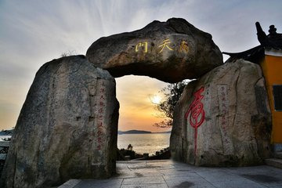
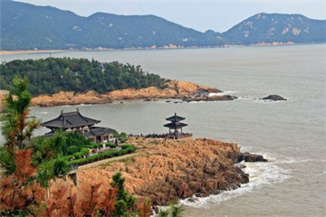
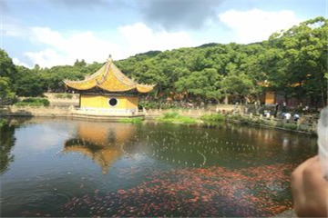
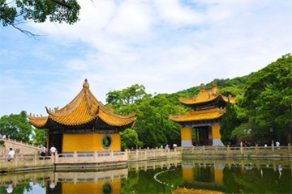
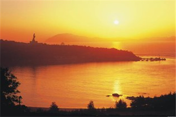

morly旅游圈
景点主要分布以普济寺、南海观音、佛顶山分别为中心的三个区域，游玩每个区域大概需要半天时间。 其中的南海观音是岛上的标志性建筑，而不肯去观音殿则拥有普陀山最为传奇的传说，不能错过。 除了宗教景点之外，在岛东侧还分别有千步沙和百步沙两个优良的海滨浴场，喜欢观海玩水的游客可以前去。 一般游玩普陀山景区大概需要2-3天时间，需要在岛上住宿和吃饭。岛上的物价比岛外贵，所以如果可能的话尽量带一些零食和饮料。
景区区域分布: 南天门景区 以轮船码头为核心，有正山门广场、海岸牌坊、短姑道头、南天门。 普济寺景区 以普济寺为核心，有海印池、菩萨墙、文昌阁、多宝塔、百步沙、法华洞、仙人井、朝阳洞、朝阳阁等。 法雨寺景区 以法雨寺为核心，有千步沙、望海亭、杨枝庵、大乘庵、文物馆等。 佛顶山景区 以慧济寺为核心，有海天佛国崖、 普陀鹅耳枥树、刀劈石、天灯台等。 西天景区 以自然风貌为主：有心字石、磐陀石、二龟听法石、千年古樟树、炼丹洞（梅福庵）、观音洞等。 梵音洞景区 有梵音洞、飞沙岙、善财洞等。 紫竹林景区 有南海观音露天大佛、潮音洞、紫竹林（不肯去观音院）等。 洛迦山景区 洛迦山是普陀山的邻岛，远观如海上睡佛。需要从普陀山坐船前往，轮船一天有三班，分别为早上7点，8点以及下午13：00，航行时间约为30分钟，在洛迦山上停留时间为1个半小时，需坐同班船返回。
其他冷门景点: ①朝阳洞、朝阳阁：位于分隔千步沙和百步沙的小山头上，是观沧海，看日出的绝佳点。 ②千步沙：普陀山上最长、最大、最好的沙滩，海水干净，沙质细腻，游人稀少，是小情侣们谈情说爱的好去处。 ③梵音洞：位于普陀山的最东面，实际上是建于海边石缝间的空中楼阁，是听潮看海的好地方，据说虔诚的佛教徒在此还能看到观音菩萨显灵。 ④佛顶山顶峰的天灯台：这是普陀山全岛的最高点，建有军事哨所，可以鸟瞰舟山群岛海天风光，视野绝佳。 ⑤南天门：位于轮船码头右侧200米，可看海景。
交通: 公交车 普陀山由两条旅游专线车将大多数景点连接起来。这两条专线车每隔10～15分钟一班，运营至17：00止，17：00以后各类车辆陆续收工，游客应在此前返回住地。从码头到前寺4元，从百步沙到索道站8元 1号线：百步沙（普济寺）、百步阁、紫竹林、入三摩地、码头、海防新村、海鲜园、宝陀饭店、西天渡口（香会期及特殊节假日停驶） 2号线：百步沙（普济寺）、朝阳洞、大乘庵、法雨寺、飞沙岙、宝月庵、古佛洞、索道站 出租车 普陀山景点较分散，团体包车更划算，12座国产丰田面包车400-600元/天，20座国产丰田中巴车800-1000元/天，普陀山旅游淡旺季明显，淡季可议价
门票: 淡季票（1、12月）:140人民币；旺季票（2-11月）:160人民币 (1月1日-12月31日 周一-周日) tips: 正月初一至初五、“五一”、“十一”期间上浮至门票200 元/ 人次； 保险自愿（5 元，不买的话需要主动说） ； 普陀山景区门票不包含寺院香花券和洛迦山景点门票。
开放时间: 08:00-17:00 (1月1日-12月31日 周一-周日)
内容整理至网络，如有侵权，请联系我们！1255394075@qq.com
    